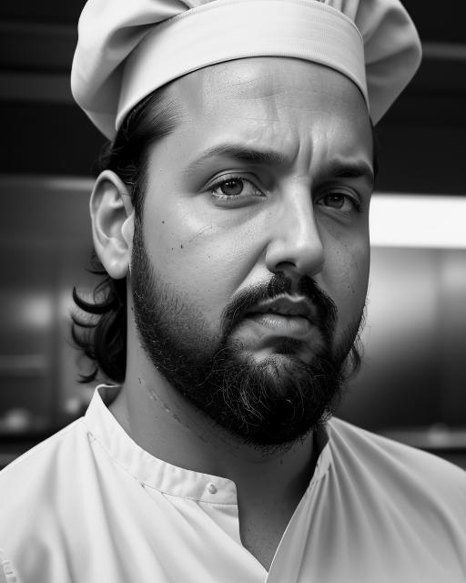

"Conheça o talentoso Chef Douglas Navas, o gênio culinário por trás das maravilhas do Culinária Criativa! Desde jovem, ele se apaixonou pela cozinha, e desde então, tem sido uma jornada de descoberta e criatividade. Depois de aprimorar suas habilidades nos melhores restaurantes da cidade, Douglas decidiu trilhar seu próprio caminho, desafiando convenções e explorando novos sabores. Com uma mente curiosa e uma habilidade extraordinária para combinar ingredientes incomuns, ele transforma pratos simples em obras de arte culinárias. Sua abordagem inovadora e seu compromisso com a excelência garantem que cada refeição seja uma experiência memorável. Junte-se a nós enquanto Douglas nos leva em uma jornada gastronômica emocionante, onde cada prato conta uma história e cada garfada é uma aventura para o paladar."
Seja Bem Vindo ao Culinaria Criativa
Um pouco Sobre nós!
"Seja bem-vindo ao Culinária Criativa, o seu destino culinário onde a arte da gastronomia se encontra com a imaginação sem limites! Aqui, exploramos um mundo de sabores autênticos e ousados, com uma coleção de receitas reais e criações culinárias malucas que desafiam as convenções. Nossa missão é inspirar sua criatividade na cozinha, proporcionando experiências sensoriais únicas a cada prato. Desde clássicos reconfortantes até combinações inovadoras, embarque nesta jornada culinária conosco e descubra o prazer de experimentar a culinária de uma maneira completamente nova."
Conheça nosso Chef !
